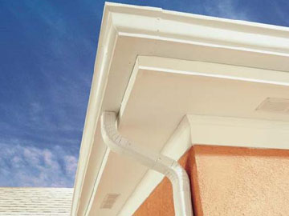
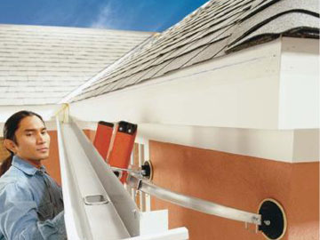

Seamless gutters means there are no joints to leak. Our gutters are custom-made on the premises to fit your home. We use only the heaviest gauge (.032") aluminum coils for your gutters Your seamless gutters are installed with hidden hangers, which are fastened using two (2) screws per hanger.
The finish on the materials is warranted not to blister, flake, chip, crack or peel for a period of twenty years. As with all our installations, we warrant our workmanship to be free from defect for a period of five years.
Key Benefits:- No need to repaint year after year.
- Aluminum doesn't rust like galvanized steel.
- Aluminum is lighter than steel.
- We use hidden hangers with screws instead of nails. Screws are less likely to come loose and don't require a hole in the face of the gutter system.
- With no seams except at the corners you can be sure that there will be no leaks.
- Gutters are offered in 14 different colors, which are baked on for a long, beautiful appearance. All finishes are guaranteed for 20 years to insure a long-lasting, beautiful finish.
- 5" and 7" aluminum seamless gutters.
- Seamless guttering provides a more uniform appearance.